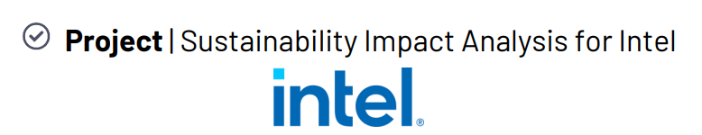
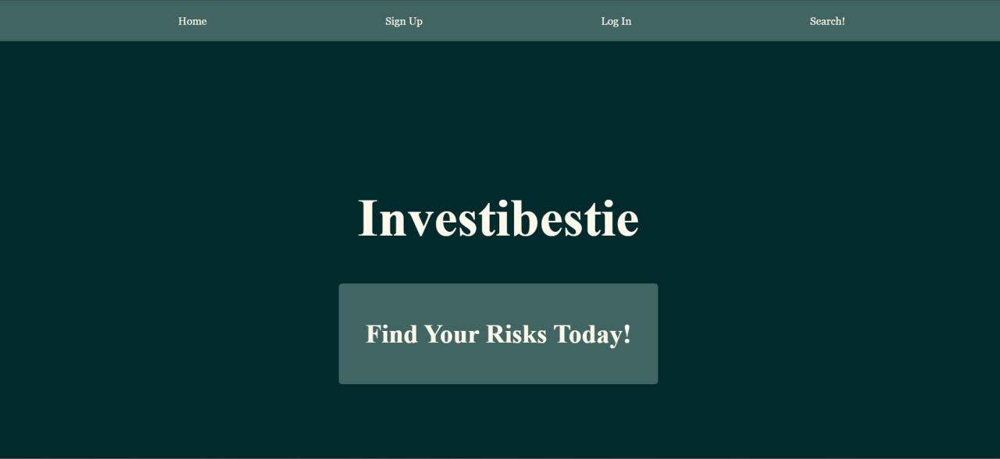
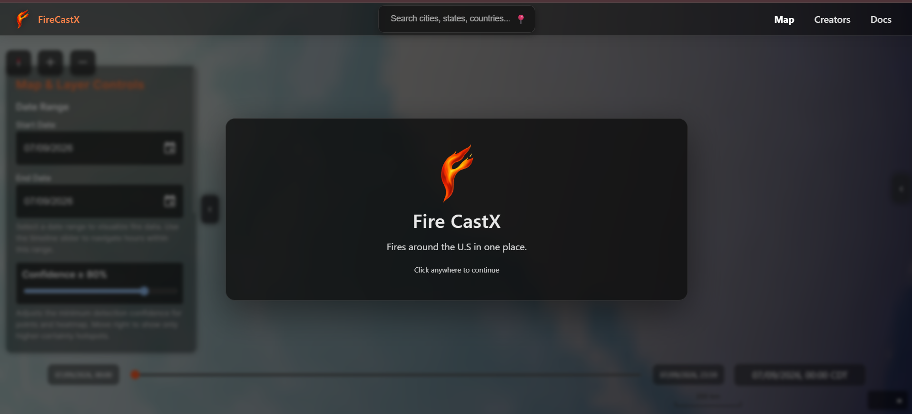
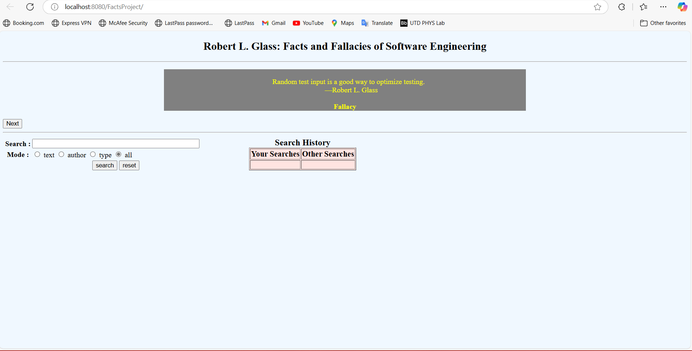

📊Sustainability Impact Analysis📊
Data Analytics Project | Intel Collaboration
Analyzed 600K+ device records using SQL to measure Intel’s 2024 sustainability impact. Built data pipelines, engineered segmentation features, and developed KPI analyses to identify energy savings, CO₂ reduction, and regional/device trends.
Tech: SQL • CTEs • Window Functions • Data Analytics

🎤Grammy.com Traffic Analysis🎤
Data Analytics Project | The Grammys Collaboration
Developed a Python analytics pipeline to analyze Grammy.com visitor behavior and uncover engagement trends. Created visualizations and KPIs to compare awards-night traffic patterns with baseline activity and validate insights across datasets.
Tech: Python • Pandas • Matplotlib • Data Visualization
💻Financial Intelligence Dashboard💻
Hackathon Project | Team of 4
Built a full-stack financial dashboard with interactive stock visualizations, user authentication, and real-time market/news integrations. Connected a Flask backend with financial APIs and ML-based risk analysis to deliver actionable insights.
Tech: JavaScript • HTML/CSS • Flask • Firebase • APIs • Machine Learning

🔥Wildfire Prediction System🔥
Software Engineering Project | Raytheon Collaboration
Led a 6-person engineering team to build a wildfire data pipeline supporting predictive modeling and geospatial visualization. Managed project execution while developing workflows to clean, standardize, and prepare large-scale wildfire datasets.
Tech: Python • SQL • Data Engineering • Geospatial Data

⚙️Web Application Optimization⚙️
Software Engineering Project
Modernized a legacy Java web application using test-driven development practices. Expanded automated testing coverage, improved code maintainability, and refactored complex components while preserving existing functionality.
Tech: Java • JUnit • TDD • Software Testing

Want to see more?
I strongly encourage you to checkout my GitHub! That's where you'll be able to check out all my independent programming projects and learning journey. 😉